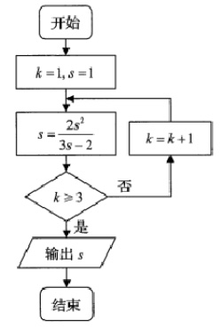
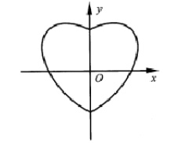
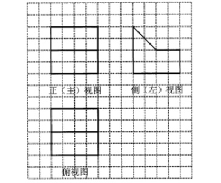
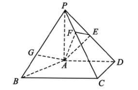
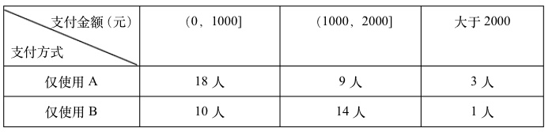

2019-北京-理-1
已知复数z=2+i,则z·z¯=
A.3‾√
B.5‾√
C.3
D.5
2019-北京-理-2
执行如图所示的程序框图,输出的s值为

A.1
B.2
C.3
D.4
2019-北京-理-3
已知直线l的参数方程为{x=1+3ty=2+4t(t为参数),则点(1,0)到直线距离是()
A.15
B.25
C.45
D.65
2019-北京-理-4
已知椭圆C:x2a2+y2b2=1(a>b>0)的离心率为12,则
A.a2=2b2
B.3a2=4b2
C.a=2b
D.3a=4b
2019-北京-理-5
若x,y满足|x|≤1−y,且y≥−1,则3x+y的最大值为()
A.−7
B.1
C.5
D.7
2019-北京-理-6
在天文学中,天体的明暗程度可以用星等或者亮度来描述,两颗星的星等和亮度满足
m2−m1=52lgE1E2,其中星等为mk的形的亮度Ek(k=1,2).已知太阳的星等
是−26.7,天狼星的星等是−1.45,则太阳与天狼星的亮度的比值为()
A.1010.1
B.10.1
C.lg10.1
D.10−10.1
2019-北京-理-7
设点A,B,C不共线,则"AB−→与AC−→−的夹角为锐角"是"|AB−→+AC−→−|>|BC−→−|"的
A.充分而不必要条件
B.必要而不充分条件
C.充分必要条件
D.既不充分也不必要条件
2019-北京-理-8
数学中有许多形状优美,寓意美好的曲线,曲线C:x2+y2=1+|x|y就是其中之一.
(如图)给出下列三个结论:

(1):曲线C恰好经过6个整点(即横,纵坐标均为整数的点);
(2):曲线C上任意一点到原点的距离都不超过2‾√;
(3):曲线C所围成的"心形"区域的面积小于3
其中, 所有正确的序号是
A.(1)
B.(2)
C.(1)(2)
D.(1)(2)(3)
2019-北京-理-9
函数f(x)=sin22x的最小正周期是()
2019-北京-理-10
设等差数列{an}的前n项和为Sn,若a2=−3,S5=−10,则a5=(),Sn的最小值为
2019-北京-理-11
某几何体是由一个正方体去掉一个四棱柱所得,其三视图如图所示.如果网格上小正
方形的边长为1那么改几何体的体积为()

2019-北京-理-12
已知l,m是平面α外的两条不同直线,给出下列三个论断:
(1)l⊥m;(2)m//α;(3)l⊥α
以其中两个论断作为条件, 鱼虾的一个论断作为结论. 写出一个正确的命题: ().
2019-北京-理-13
设函数f(x)=ex+ae−x(a为常数).若f(x)为奇函数,则a=();若f(x)在R上为
增函数,则a的取值范围是()
2019-北京-理-14
应用题:关于分段函数
2019-北京-理-15
在ΔABC中,内角A,B,C所对的边分别为a,b,c,a=3,b−c=2,cosB=−12.
(I)求b,c的值
(II)求sin(B−C)的值
2019-北京-理-16
如图,在四棱锥P−ABCD中,PA⊥平面ABCD,AD⊥CD,AD∥BC,
PA=AD=CD=2,BC=3.E为PD中点,点F在PC上,且PFPC=13
(I)求证:CD⊥平面PAD
(II)求二面角F−AE−P的余弦值
(III)设点G在PB上,且PGPB=23.判断直线AG是否在平面AEF内,说明理由

2019-北京-理-17
改革开放以来,人们的支付方式发生了巨大转变,近年来,移动支付成为主要支付了
方式之一.为解某校学生上个月A,B两种移动支付方式的使用情况,从全校学生中
随机抽取100人,发现样本中A,B两种支付方式都不使用的有5人,样本中仅使用A和
仅使用B的学生的支付金额分布情况如下:

(I)从全校学生中随机抽取1人,估计改学生上个月A,B两种方式都是用的概率
(II)从样本仅使用A和仅使用B的学生中各随机抽样1人,以X表示这2人从上个月
支付金额大于1000元的人数,求X的分布列和数学期望
2019-北京-理-18
已知抛物线C:x2=−2py经过点(2,−1)
(I)求抛物线C的方程及其准线方程
(II)设O为原点,过抛物线C的焦点做斜率不为0的直线l叫抛物线C于两点M,N.直线
y=−1分别交OM,ON于点A和点B.求证:以AB为直径的圆经过y轴上的两个定点